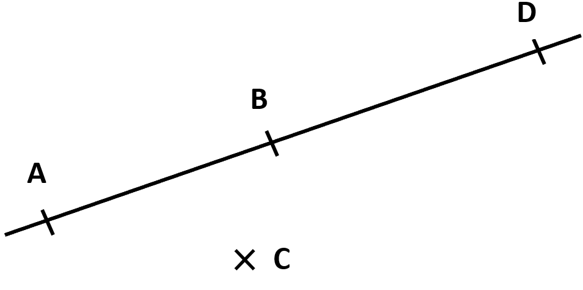
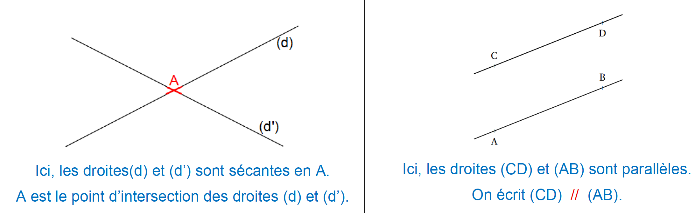
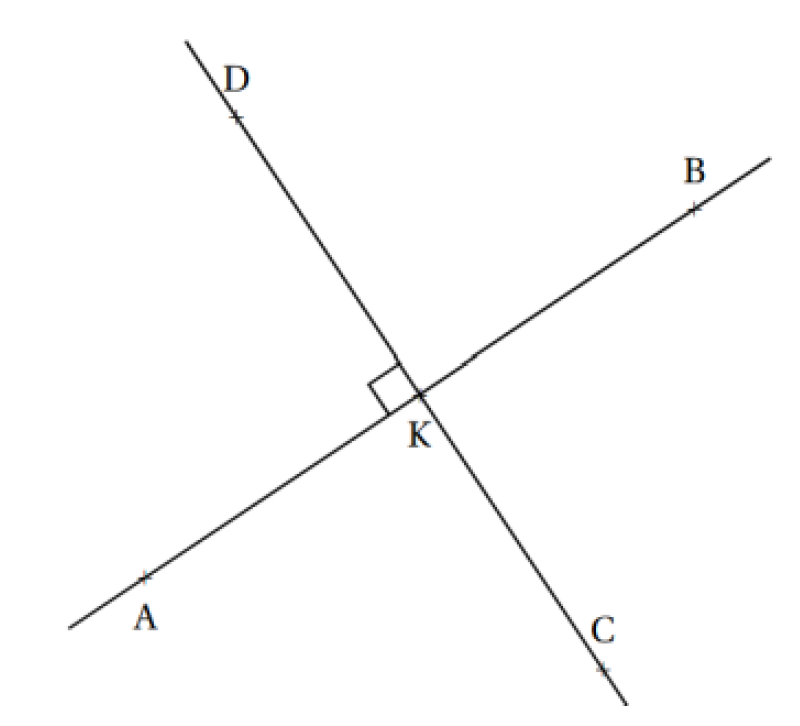

| Points | Droite | |
|---|---|---|
| Tracé | ||
| Remarques | Un point est toujours représenté par une croix. | Une droite est "illimitée" dans les deux directions. |
| Notation | A ;B ;C | (AB) ou (BA) |
| Segment | Demi-droite | |
|---|---|---|
| Tracé | ||
| Remarques | Un segment est une portion (partie) de droite limitée par deux points: Ces points sont les extrémités du segment. | Une demi-droite est "illimitée" dans une seule direction. |
| Notation | [AB] ou [BA] | [AB) ou (BA] |

Le point D est sur la droite (AB), on dit que "D appartient à la droite (AB)" et on note D ∈ (AB).
Le point C n'est pas sur la droite (AB), on dit que "C n'appartient pas à la droite (AB)" et on note C ∉ (AB).

On note ces quatre angles de la manière suivante :
BEC ou CEB ; BED ou DEB ; DEA ou AED ; CEA ou AEC

On code un angle droit en faisant un petit carré sur la figure.
On dit que les droites (DC) et (AB) sont perpendiculaires en K et on note (DC) ⊥ (AB).